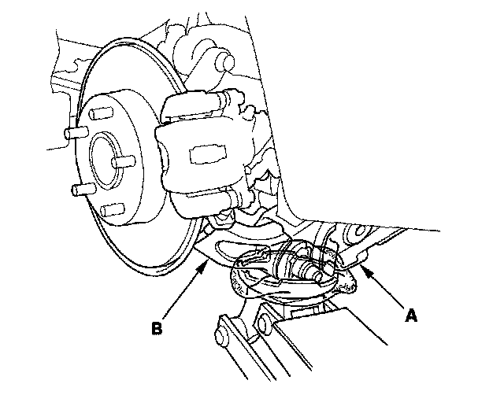
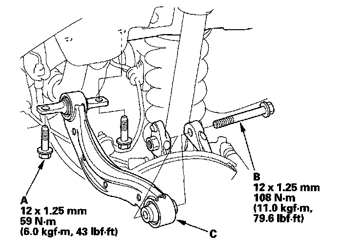

Rear Suspension
Upper Arm Removal/Installation1. Raise the rear of the vehicle, and support it with safety stands in the proper locations.
2. Remove the rear wheel.
3. Position a floor jack at the connecting point of the trailing arm (A) and the knuckle (B).

4. Remove the flange bolts (A) from the vehicle.
NOTE: Use the new flange bolts during reassembly.

5. Remove the flange bolt (B) from the knuckle, and remove the upper arm (C).
NOTE: Use the new flange bolt during reassembly.
6. Install the upper arm in the reverse order of removal, and note these items:
^ Tighten all mounting hardware to the specified torque values.
^ First install all the components, and lightly tighten the bolts, then raise the suspension to load it with the vehicle's weight before fully tightening to the specified torque values.
^ Before installing the wheel, clean the mating surface of the brake disc or the brake drum and the inside of the wheel.
^ Check the wheel alignment, and adjust it if necessary.